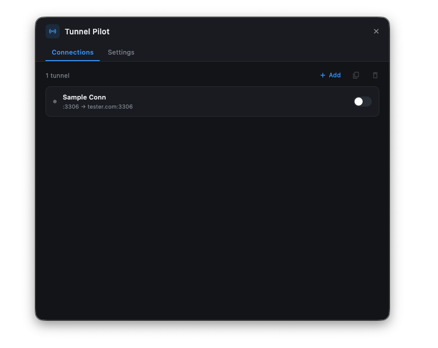
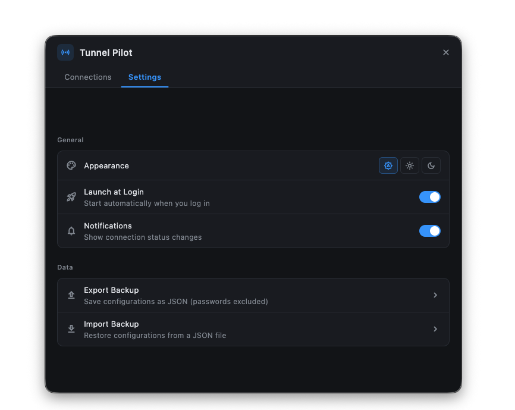
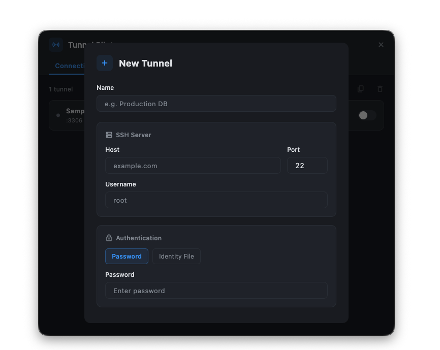

SSH Local Port Forwarding, Simplified
Tunnel Pilot — your SSH tunnel manager.
Stop typing ssh -L over and over. Tunnel Pilot manages your local port forwarding from the system tray on macOS, Windows, and Linux — configure once, toggle with a click.
curl -fsSL https://kalfian.github.io/tunnel-pilot/install.sh | bash
Clean & Intuitive Interface
A modern SSH tunnel manager designed for developers who value simplicity



Everything You Need to Manage SSH Tunnels
No more memorizing ports and hosts — just point, click, and forward
System Tray Native
Lives in your Mac menu bar or system tray. No window clutter — just a clean icon with quick access to all your SSH port forwarding tunnels.
One-Click Port Forwarding
Toggle SSH local port forwarding on and off from the tray menu. Color-coded status indicators show the state of each connection at a glance.
Secure Auth
Password and SSH identity file authentication. Passwords are never included in backup exports.
Backup & Restore
Export configurations as JSON and import on another machine. Identity file paths preserved, passwords require re-entry.
Notifications
Desktop notifications when tunnels connect, disconnect, or encounter errors. Stay informed without checking.
Launch at Login
Start automatically when you log in. Your tunnels are always ready when you need them.
Install Tunnel Pilot
Set up SSH local port forwarding in minutes
1 Run the installer
Paste this into your terminal. Works on macOS, Linux, and Windows WSL (open WSL first: Win + R → type wsl).
Detects your platform, downloads the latest release, installs it, and launches the app automatically.
2 Configure
Click the tray icon in your menu bar, open Settings, and add your SSH tunnels.
1 Open Command Prompt or PowerShell
Press Win + R, type cmd or powershell, and press Enter.
2 Run the installer
Paste this command and press Enter:
Downloads and runs the PowerShell installer. Fetches the latest release, extracts it to %APPDATA%\Tunnel Pilot, and launches the app.
3 Configure
Find the Tunnel Pilot icon in your system tray (bottom-right), right-click and open Settings, then add your SSH tunnels.
1 Download
Grab the latest release from GitHub Releases for your platform.
2 Install
# Windows — run the .exe installer
# Linux — extract and run
chmod +x tunnel_pilot && ./tunnel_pilot
3 Configure
Click the tray icon, select "Settings...", and add your SSH tunnel configurations.
1 Prerequisites
# https://flutter.dev/docs/get-started/install
# Linux only
sudo apt-get install libayatana-appindicator3-dev libnotify-dev
2 Clone & Build
cd tunnel-pilot
flutter pub get
# Run in development
flutter run -d macos
# Build release
flutter build macos
3 Test
Frequently Asked Questions
Common questions about SSH local port forwarding and Tunnel Pilot
What is SSH local port forwarding?
SSH local port forwarding (ssh -L) creates a secure encrypted tunnel that forwards traffic from a local port on your machine to a remote host through an SSH server. It's commonly used to access remote databases, internal web services, APIs, or any TCP service behind a firewall — without exposing them to the public internet. Tunnel Pilot provides a graphical interface to manage these tunnels without typing terminal commands.
How do I set up local port forwarding on macOS?
With Tunnel Pilot, setting up local port forwarding on Mac is simple: download and install the app, click the system tray icon in your menu bar, add a new tunnel with your SSH server details (host, username, password or identity file), specify the local port and remote host/port, then toggle it on. No terminal commands needed — Tunnel Pilot replaces manual ssh -L commands with a one-click interface that lives in your menu bar.
Is Tunnel Pilot free?
Yes, Tunnel Pilot is completely free and open source under the MIT License. There are no paid plans, subscriptions, or hidden costs. The full source code is available on GitHub, and you can build it yourself or download pre-built releases for macOS, Windows, and Linux.
What platforms does Tunnel Pilot support?
Tunnel Pilot runs natively on macOS, Windows, and Linux. On macOS it lives in the menu bar (no Dock icon). On Windows and Linux it runs in the system tray. Built with Flutter for consistent cross-platform performance.
How is this different from using ssh -L in the terminal?
While ssh -L works great for one-off connections, managing multiple tunnels across projects gets tedious. Tunnel Pilot saves your configurations, lets you toggle tunnels on/off with one click, shows connection status with color-coded indicators, sends desktop notifications, and starts automatically at login. It's the GUI that the ssh -L command deserves.